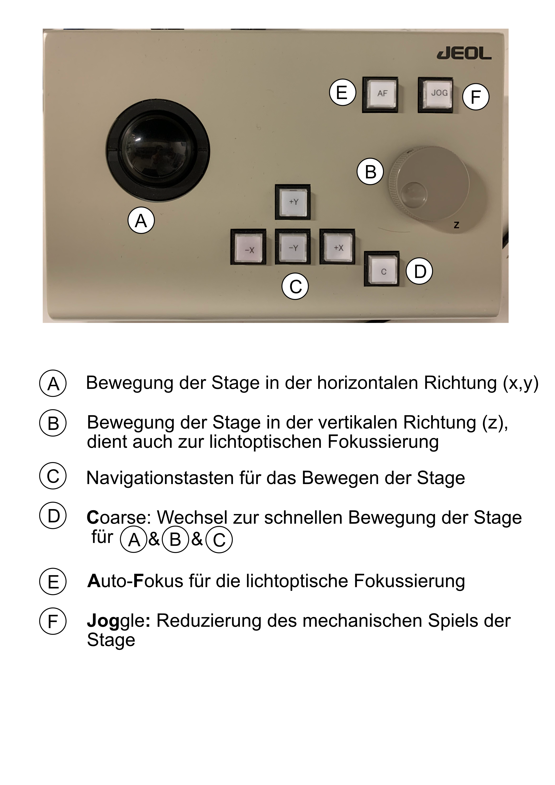
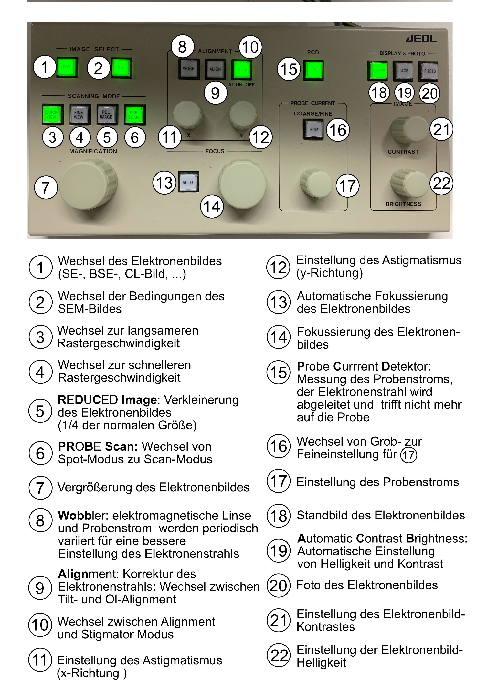
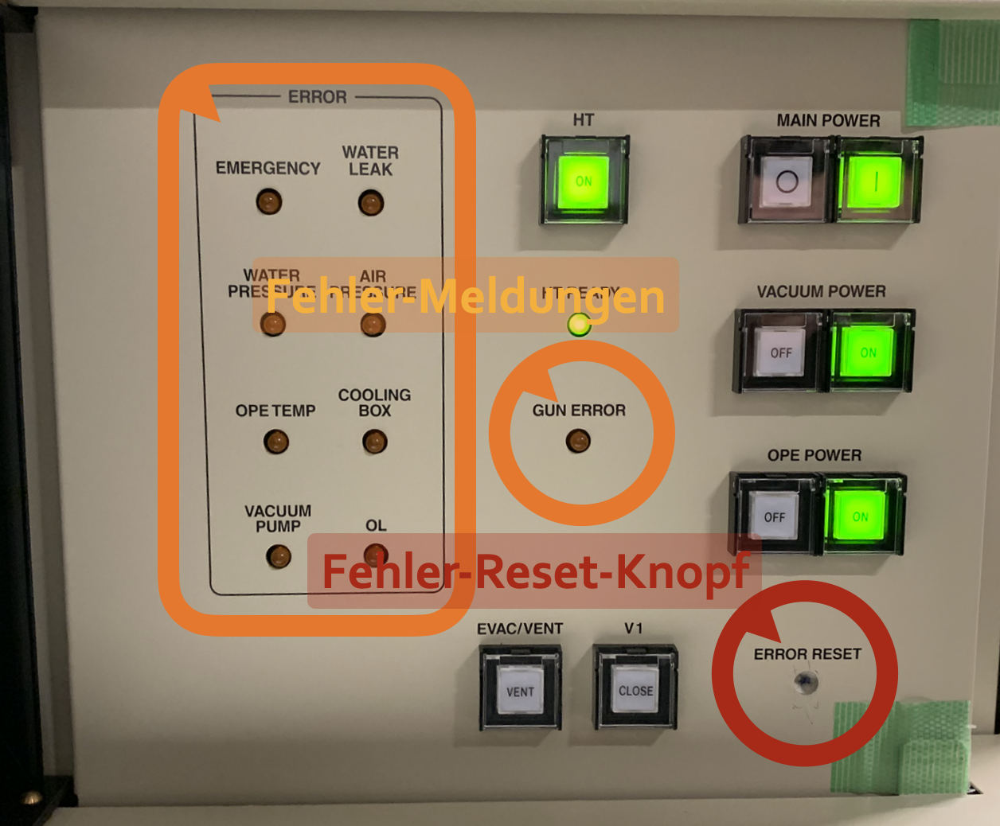

Trouble Shooting
Beschreibung des kleinen Bedien-Panels vor dem Monitor

Beschreibung des gro-en Bedien-Panels vor dem Monitor

Fehleranzeige unter dem Rauchglas-Panel
Bemerkt die Sonde einen Fehler, sollte sich automatisch das Maintenance-Fenster öffnen und das entsprechende System mit einem roten Status markiert sein. Einige der Fehler sind links im LED-Panel hinter der Rauchglas-Blende vorn an der Sonde gespiegelt (in grün …).
Wichtig: Es ist möglich, dass der Fehler nur temporär auftrat (z.B. der Kühlwasserdruck kurzzeitig zu niedrig war). Die Fehlermeldung wird nicht automatisch gelöscht, damit die Nutzerin weiß, dass es einen Fehler gab. Um die Fehlermeldung zu löschen gibt es ebenfalls im LED-Panel hinter der Rauchglas-Abdeckung vorn an der Sonde rechts unten ein kleines Löchlein mit einem Reset-Knopf, der mit einem schmalen Stift/Inbus/… für ca. 2-3 Sekunden tief eingedrückt werden muss – es klickt kurz.
Ist die Fehlermeldung gelöscht, sollte wieder alles in Ordnung sein. Ansonsten sollte der Fehler erneut angezeigt werden. Dann muss noch mal (nach)behoben werden.

Water Pressure Lampe unter dem Rauchglas-Panel leuchtet
Bei Ausfall der Messung durch den Fehler „check water flow“ wird eine laufende Messung gestoppt oder der Start einer neuen Messung nicht zugelassen.
Lösung
Der erste Schritt ist es den Wasserkühler im Nebenraum (Präparation) zu kontrollieren, ob dieser noch läuft. Wenn dieser intakt ist, sollte die Einstellung des Wasserdurchflusses an der Sonde kontrolliert werden (rote Anzeige hinter der Mikrosonde). Die Summer der beiden Werte muss dem Durchfluss (in l/min) am Wasserkühler entsprechen.
Sollte der Durchfluss in Ordnung sein, muss die schwarze Klappe vorne rechts an der Mikrosonde geöffnet werden und mit einem dünnen Stab (z.B. Inbus) die ERROR RESET- Taste gedrückt werden (2 sec).
Die gelbe Lampe sollte anschließend aus gehen und in der Maintenance-Condition alle Parameter grün leuchten.
Check Pressure N2 Lampe leuchtet
Wenn im ‘Maintenance’ Fenster der Punkt ‘Check Pressure of N2 Gas’ rot ist, muss die N2-Gasflasche getauscht werden. Möglicherweise brennt auch die Lampe ‘Air Pressure’ vorn an der Sonder hinter der dunklen Rauchglasscheibe.
Es kann sein, dass nach dem N2-Flaschen Tausch der Punkt ‘Check Pressure of N2 Gas’ weiterhin rot ist, und auch die ‘Air Pressure’ Lampe weiter leuchtet.
Lösung
Zunächst nachschauen, ob der Druck der N2-Flasche, sowie des Reduktionsventils an der rechten Wand hinter der Sonde auf etwas mehr als 5 bar stehen. Wenn das nicht der Fall ist, den Durch darauf erhöhen.
Wenn die Warnungen noch immer an sind, auf dem Panel vorn an der Sonder hinter der dunklen Rauchglasscheibe ‘Vacuum Power’ ausschalten und kurz darauf wieder einschalten.
Im Maintenance Fenster werden nacheinander ein paar der Punkte auf rot springen, während verschiedene Ventile auf und zu gehen. Der Vorgang dauert einige Minuten.
Sobald das vorbei ist, sollte man min. 1 Stunde warten, bis die Sonde wieder vollständig betriebsbereit ist.

PC-SEM oder PC-EPMA Fenster wollen nicht wie man selbst
Eines der Fenster PC-SEM oder PC-EPMA – oder beim reagieren nicht, hängen, zeigen falsches an, etc.
Lösung
Beide Fenster schließen, z.B. unten über die Taskleiste. Programm ‘JEOL EPMA’ neu starten über den Shortcut ganz links auf dem Desktop. ’’‘(noch Bild einfügen)’’‘. Wenn das nicht geht, Rechtsklick auf das Symbol und ’Run as Administrator’ anklicken. Wenn das nicht geht das Symbol ‘Restart EPMA’ anklicken. ’’‘(noch Bild einfügen)’’’ Dann das Programm neu starten.
Sollte alles nicht helfen, Dominik anrufen. Evtl. muss der Computer neu gestartet werden. Das sollte aber abgesprochen werden.
PCD- oder Freeze-Taste auf dem Schaltpanel reagieren nicht
Die PCD-Taste oder die Freeze-Taste auf dem Schaltpanel reagieren nicht mehr.
Lösung Der Stecker des Schaltpanels muss von der Mikrosonde abgeschraubt werden. Hierzu muss man hinter die Mikrosonde bzw. hinter den Bildschirm gehen und den Stecker mit der Aufschrift „OPN2“ (ganz links) für kurze Zeit lösen. Anschließend muss die Software neu gestartet werden. Dafür schließt man das EPMA-Menu und klickt mit rechts auf den Icon „Reset EPMA-Shortcut“ auf dem Desktophintergrund. Anschließend wählt man „Rund as admin“ und bestätigt mit „Yes“. Anschließend kann man wieder die EPMA Software öffnen.
Schleusenstab
Der Schleusenstab lässt sich nicht mehr waagrecht kippen und steht daher schief. Ein Probenwechsel und das belüften der Schleusenkammer ist auch nicht mehr möglich. In der Software wird der Probenshuttle in der Probenkammer angezeigt.
’‘’Nur von eingewiesenem Personal durchzuführen’’’
Diese finden sich in “Telefon-Email-Kontakte”
Lösung Unter dem Menüpunkt „Maintenance“ öffnet man zuerst das Fenster „Self diagnosis (Y)“ um den Status der Ventile überprüfen zu können. Man lässt anschließend die Probe vorerst in der Probenkammer und klappt den Schleusenstab herunter (vertikal). Über das Fenster „Self diagnosis (Y)“ überprüft man den Status der Ventile, anschließend belüftet man über die Software des SEM-Monitors.
Die Schleuse kann geöffnet und der Pin zurückgezogen werden. Anschließend bewegt man den Stab bzw. dreht ihn vorsichtig quer der Längsachse hin und her oder man kann ihn auch in fast waagrechten Zustand vorschieben.
Sobald der Stab sich wieder in die waagrechte Position bringen lässt ist der Pin wieder eingerastet. Das bedeutet man kann die Probenkammer wieder evakuieren und die Probe wie gewohnt schleusen.
Datenpunkte falsch abgespeichert
Wenn man die Datenpunkte in das falsche Programm abgespeichert hat (z.B. Qualitativ statt Quantitative Analyse) kann man sie nicht einfach kopieren und einfügen.
Lösung
Man kann die eingegebenen Datenpunkte in dem falschen Programm markieren und dann mit “rechts Klick” und “copy” kopieren. Man geht in das gewünschte Programm und fügt die Punkte wieder mit “rechts Klick” und “paste” ein.